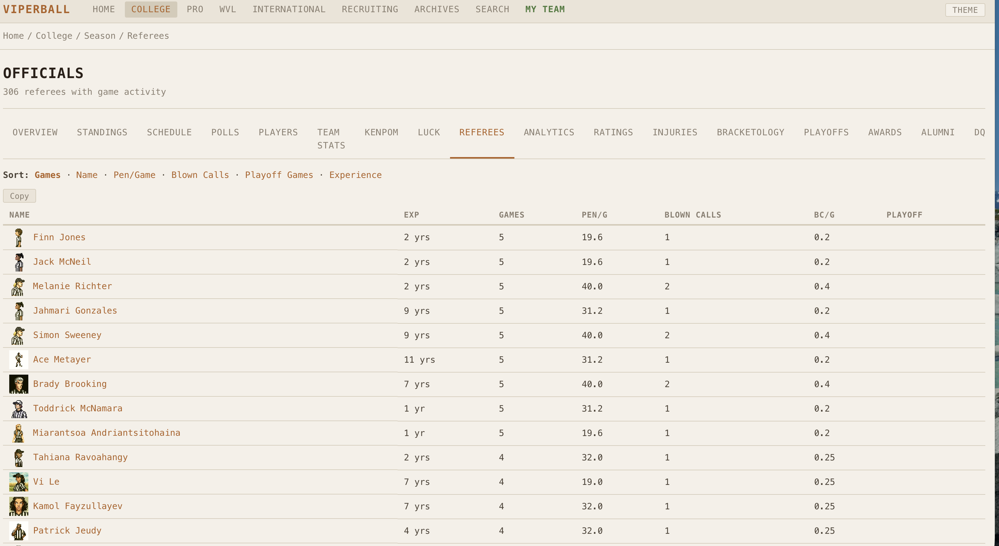

Viperball
A gridiron sport I invented, with a rulebook, a simulation engine that plays it, and a 280-team universe to play it in.

Viperball started as a hypothetical in a Reddit thread: what would football look like if it had evolved from the pre-forward-pass era, with kicking-led, two-way play and lateral chains carrying the ball forward? I answered it in full: I designed the sport, wrote its rulebook, built a simulation engine that plays it, populated a 280-team universe to play it in, and shipped four different ways to watch it happen.
It’s really six projects: a sport, a simulation engine, a generated world, and three interfaces onto them.
The sport
An invented game with an internally consistent rulebook.
Viperball is a gridiron code with its own logic: six downs to gain twenty yards, with the ball moving by running, lateral chains, and kick passes (a kicked ball to a downfield teammate). Its six-channel scoring system makes a touchdown worth 9 and a live-play drop kick worth 5, and a half-point “bell” rewards a loose-ball recovery. There’s a position native to the sport, the Viper, a pre-snap-motion mismatch machine, along with a sixth official invented to govern it.
The hard part was keeping it coherent. Every rule creates a strategy, every strategy needs a counter, and a coach has to be able to scheme around the whole thing. The full rulebook runs to dozens of pages: field, clock, penalties across five phases of play, weather, overtime, officiating.
The ruleset lives in README.md and RULES.md.
The simulation engine
A contest-based stochastic model that turns rules into believable games.
Every yard, catch, and kick is a contest between specific players’ attributes, resolved with probability. The rule that makes games feel real is that skill proximity creates variance. Evenly matched players produce wild play-to-play swings, and a mismatch produces consistent, grindy outcomes. On top of that sit hot streaks that narrow a player’s variance toward the high end, a fatigue cliff that forces real depth-chart usage, a kicker-range model where the kicker’s rating sets the range, weather effects, and nine distinct offensive schemes that reshape the underlying math.
~14,500-line core · pure Python · a tuned probability model.
The world
280+ teams across four leagues, most of them procedurally generated.
The sport needed teams, so I generated them: a 187-team women’s collegiate league mapped onto real universities, plus pro, women’s-pro, and international circuits. Each team is a structured record with a 36-player roster, ratings, an identity, and a recruiting pipeline. Generation scripts produce region-aware names, coaching staffs, referees, and rosters at scale, so the world can grow without hand-authoring every player. Multi-season dynasty mechanics run on top: recruiting, a transfer portal, signing day, coach hiring and firing, polls, awards, and bowl games.

~280 team records · 4,500+ players · JSON-backed · procedural name / roster / staff generators.
The interactive app
A play-it-yourself sim: call plays, run a dynasty, act as commissioner.
This is the hands-on interface where you advance a season week by week, manage a program, or run a whole league as commissioner. Built in NiceGUI (a Python-native, Vue-backed UI framework) and served alongside the API in a single process, it covers play-calling, dynasty management, draft and free-agency flows, and a multi-league spectator mode, all reading live from the simulation engine.
NiceGUI (Vue under the hood) · Plotly charts · FastAPI + uvicorn, single-process · deployed on Fly.io.
The stats terminal: viperball.xyz
A terminal-style stats portal for a fictional sport.
The public face of the project: a fast, keyboard-driven, server-rendered stats site that updates in real time as simulations run. College, Pro, WVL, and International sections; box scores, standings, player leaderboards, recruiting, and archives. It is the statistical record a real league would keep, for a sport that doesn’t exist. It ships with a rack of switchable themes (Bloomberg Light, Navy & Ivory, Dark Ocean, CRT, Solarized) and “?” keyboard shortcuts.
FastAPI sub-router · Jinja2 server-side rendering.
The method
Design specs and after-action reports for every major system.
Every major system shipped with a written rationale: 30+ design specifications and after-action reports documenting why each mechanic exists and what changed. I treated balance as a measurement problem, running 200+ game batch simulations and validating aggregate scoring, turnover rates, and conversion cascades against explicit design targets before shipping a change.
30+ specs and after-action reports · 200+ game validation batches.
Stack
Python 3.11 · FastAPI · NiceGUI · Pydantic · Plotly · Jinja2 · pandas / numpy · Docker · Fly.io.
Roughly 120,000 lines of Python across the engine, four frontends, the data universe, and the generation tooling.
Writing
A three-part series in Sideline Engineering, the newsletter where the design history of Viperball lives.